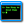
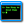

scenejs nexus
SceneJS + actors + JSON-RPC + PubSub
- actor engine for SceneJS 3.0 with asynchronous JSON-RPC and PubSub messaging patterns
- fork it at GitHub
- written by xeolabs on SceneJS V3
- type '~' to open a command terminal to speak to the nexus
- read more on the wiki
loading the nexus, just a moment..

 
